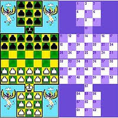
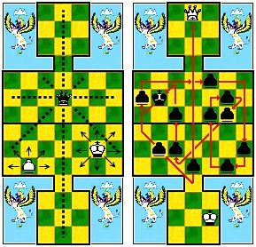
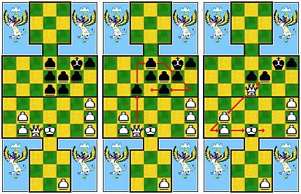

Правила игры
Перед началом игры чёрные шатры выставляются на полях игровой доски 1-9, 11-17, 18-24, белые: 39-45, 46-52, 54-62. Бий (король) чёрных - на 10, бий белых на 53. Диаграмма 1.
Диаграмма 1
Бий ходит по вертикали, горизонтали, диагонали на одно соседнее поле, свободное от других фигур. Диаграмма 3.
Диаграмма 3
Шатра ходит по вертикали, диагонали, горизонтали. Запрещается ходить назад (диаграмма 3). Шатры, находящиеся в крепости (1-9, 54-62) называются резервом. Ходить в своей крепости нельзя. Они могут выставляться по одной фигуре на любую свободную клетку на своей половине. В ворота крепости не могут выставляться. Очерёдность выставления шатров: для белых: 54, 55, 56 и т.д., для чёрных: 9, 8, 7, и т.д.
Ходы батыром Шатра, достигшая при своём ходе любого из батырских (дамочных) полей в крепости соперника (белые - 1,2,3 клетки в крепости чёрных; чёрные - 60,61,62 в крепости белых) превращается в батыра (дамку) и со следующего хода приобретает права этой фигуры. Батыр ходит в любом направлении на любое количество ходов (диаграмма 3).
Особые правила ходов Фигуры, вошедшие на любое из полей в крепости или в её ворота, со следующего хода пользуются правом резерва, т.е. они могут выставляться как шатры резерва. Это право сохраняется за этими фигурами на всё время нахождения этих фигур в резерве. Правило очерёдности выставления фигур при этом не соблюдается. Бий, находящийся в воротах крепости, или в крепости изначально пользуется правом резерва. Как только он выходит из своих ворот или из своей крепости на большое поле, то он сразу теряет это право. Бий и батыры не могут входить в свою крепость, пока там находится хотя бы одна своя шатра.
Правила взятия фигурами. Взятие шатрой Шатра при своём ходе обязана взять фигуру противника, если последняя находится на соседнем с ней поле, а за ней имеется свободное поле. Берёт в любом направлении, если есть возможность взять несколько фигур, то она обязана брать до конца. Если есть возможность взятия в нескольких направлениях, то берущий имеет право выбора. При взятии можно берущей шатрой любое количество раз становиться на одно и то же, свободное от фигур поле, но нельзя дважды перепрыгивать через одну и ту же фигуру соперника(правило "турецкого" удара).Диаграммы 5 - 7.
1… 28-27 2. 48:13:15:31:28 белый батыр обязан остановиться на поле 28, так как дважды перепрыгнуть через шатру не может. 2… 22:34:46:48:50 уничтожая бия.
Диаграмы 5-7
Взятие бием Бий берёт, так же как и шатра, но при этом бий может брать не до конца избранного варианта, а также право не брать фигуры соперника, но в этом случае играющий должен обязательно ходить бием. Взятие батыром Батыр может брать на любом расстоянии и любое количество фигур соперника. Брать надо до конца. На диаграмме 4 батыр может побить 11 шатёр и бия: 1. 2:53:32:11:17:52:50:22:24 (при желании бий может побить на другое поле - :38, после чего у чёрных остаются три шатры и бий) :48:34:13 и последним взятием забирается бий :25! Особые правила взятия фигурами При возможности взятия несколькими фигурами, выбор предоставляется берущему. Если один из берущих фигур - бий, то играющий теряет право совершения безударного хода. Шатры, находящиеся на большом поле, не имеют право брать те фигуры соперника, после взятия, которых они становятся на поля в своей крепости или в её ворота. Бий и батыры не имеют право брать те фигуры соперника, после взятия, которых они оказываются в своей крепости или её воротах, если там находится хотя бы одна своя шатра.
Торбоков А.